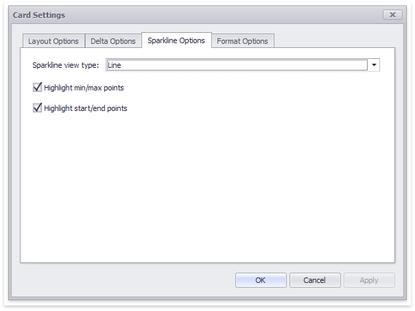

Sparkline
Sparklines can be used to visualize the variation of actual or target values (for instance, over time).

To learn how to display the sparkline for different layout types, see Layout.
Data Binding Specifics
You need to provide a date-time or numeric dimension whose data is used as argument values to display a sparkline within the card.

If you have provided both actual and target values, a sparkline visualizes the actual value's variation.
Change Sparkline Options
To manage sparkline settings, click the Options button (the  icon) displayed next to the data item container. In the invoked Card Settings dialog, go to the Sparkline Options tab:
icon) displayed next to the data item container. In the invoked Card Settings dialog, go to the Sparkline Options tab:

The following options are available:
| Sparkline Options | Description |
|---|---|
| Sparkline view type | Defines the sparkline’s view type. Sparkline data points can be represented as area, line, bars, or win and loss squares. |
| Highlight min/max points | Specifies whether to highlight the minimum/maximum points of a sparkline. |
| Highlight start/end points | Specifies whether to highlight the start/end points of a sparkline. |